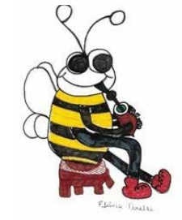
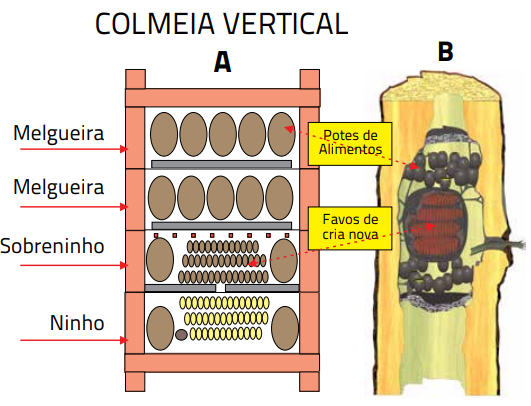

Manejo
Escolha das Espécies
Os meliponíneos dependem mais das características climáticas e florísticas de suas respectivas regiões de origem do que as abelhas melíferas (Kerr et al., 1996). De acordo com os registros dos Meliponini até o momento no Estado, verifica-se que a distribuição das espécies não é uniforme e que a ocorrência e distribuição de cada espécie de abelha sem ferrão no Rio Grande do Sul, dependem de modo peculiar dos fatores ambientais, destacando-se os aspectos climáticos e as formações vegetais predominantes.  Algumas espécies são restritas às áreas florestadas do norte do Estado, a exemplo de manduri (Melipona obscurior), mandaçaia (Melipona quadrifasciata) e guaraipo (Melipona bicolor schencki). Outras espécies, como a iraí (Nannotrigona testaceicornis) e vorá (Tetragona clavipes), estão limitadas às áreas mais altas da região norte do Estado, enquanto outras apresentam uma ampla distribuição como a irapuá (Trigona spinipes), conforme material depositado na Coleção de Abelhas da Fundação Zoobotânica do Rio Grande do Sul e na Coleção de Abelhas do Museu de Ciências e Tecnologia da PUCRS (Tabela 3). De acordo com Silveira et al., (2002), verifica-se uma pequena diversidade de Meliponini em ambientes campestres mais frios. Para os autores, o fato pode estar relacionado, pelo menos em parte, à escassez de árvores que a maioria das espécies de abelhas sem ferrão utiliza para a construção de seus ninhos (Silveira et al., 2002)
É importante que a meliponicultura regional leve em consideração a região original de ocorrência da espécie, respeitando seus atributos ecológicos de melhor adaptação ambiental. Em cada região do país há espécies de ocorrência natural, bem adaptadas às condições locais e, portanto, as espécies mais adequadas à criação racional. Além disso, também é importante o meliponicultor estar atento à legislação quanto ao transporte de meliponíneos
O art. 8°, XIX, da Lei Complementar N° 140/2011, estabelece como ações dos Estados a aprovação do funcionamento dos criadouros da fauna silvestre. O Rio Grande do Sul já possui a Instrução Normativa que regula a criação e conservação de meliponíneos nativos (abelhas sem ferrão) no estado (INSTRUÇÃO NORMATIVA SEMA N° 3/2014) (Anexo A). A norma lista 24 espécies destas abelhas e estabelece condições para a implantação dos meliponários (locais de criação das abelhas), visando atender às finalidades socioculturais, de pesquisa ientífica, de educação ambiental, conservação, exposição, manutenção, criação, reprodução e comercialização de produtos e subprodutos. De acordo com essa norma:
Art. 14. O transporte interestadual de colônias de meliponíneos ou parte delas poderá ser realizado mediante a emissão de autorização de transporte pelo IBAMA. Parágrafo Único – Não será permitida a entrada de colônias de meliponíneos exóticos no Rio Grande do Sul, exceto para finalidade científica devidamente autorizada pela SEMA.
Aquisição de enxames
De acordo com a legislação (Instrução Normativa SEMA N° 3/2014), é permitida a aquisição de enxames de meliponíneos de meliponários autorizados pelo órgão competente ou a partir de captura por meio da utilização de ninhos-isca ou ainda por multiplicação artificial de colônias:
Art. 2° - É permitida a utilização e o comércio de abelhas e de seus produtos, procedentes dos criadouros autorizados pela Secretaria Estadual de Meio Ambiente (SEMA), na forma de meliponários, bem como a captura de enxames e espécimes a eles destinados por meio da utilização de ninhos-isca.Art. 3° - Será permitida a comercialização de colônias ou parte delas desde que seja resultado de métodos de multiplicação artificial ou de captura por meio da utilização de ninhos-isca.
Iscas
Um dos maiores problemas relacionados à conservação dos meliponíneos é a obtenção dos ninhos da natureza. Era costume retirar os enxames dos ocos das árvores, mas a coleta predatória de ninhos da natureza é apontada como uma das causas de ameaça de extinção das três espécies de Melipona no Rio Grande do Sul (Blochtein & Harter-Marques, 2003).
Os ninhos-armadilha surgem como uma excelente alternativa para captura de enxames e seu uso deve ser cada vez mais divulgado e incentivado (Oliveira et al., 2013).
Esses ninhos nada mais são do que recipientes destinados a simular locais de nidificação natural para meliponíneos, possibilitando a obtenção de novos enxames, se aproveitando do processo natural de enxameação das abelhas. Atualmente, de acordo com a Resolução Conama N°346/2004 e a Instrução Normativa SEMA N° 3/2014, (ANEXOS A e B) essa é a única forma permitida para obtenção de colônias de abelhas sem ferrão diretamente da natureza.
Muitos modelos amplamente difundidos foram criados por meliponicultores. Um exemplo é a utilização de garrafas tipo ”pet”, lavadas internamente com atrativos para as abelhas (como extrato de própolis), envolvidas com papel jornal e plástico preto. A tampa da garrafa deve conter pequenos furos de diâmetro reduzido, ou ainda pode ser elaborada uma tampa perfurada feita de cerume ou própolis em substituição à original para a passagem das abelhas. Periodicamente, o meliponicultor deve verificar se as iscas foram ocupadas pelas abelhas ou retirar outros insetos que possam estar lá instalados. A enxameação nos meliponíneos é um processo progressivo (ver capítulo 2) e o tempo de duração varia muito entre as espécies (dias e até meses). Portanto, o meliponicultor, após verificar que um enxame está se instalando em sua armadilha, deve aguardar por um período superior a 30 dias para transferi-lo para uma colmeia.
Um estudo sobre o assunto foi desenvolvido em Ribeirão Preto por pesquisadores, colocando em recipientes de plástico preto um cotovelo de PVC(22 mm) (Figura 29BCD), que é utilizado como entrada do ninho. Cotovelos e armadilhas são banhados internamente com extrato de própolis. Com este tipo de armadilha é possível atrair enxames de marmelada (Friseomelitta sp.), tubuna (S. bipunctata), jataí (Tetragonisca angustula), vorá (T. clavipes) e mandaçaia (Melipona quadrifasciata). Os autores recomendam um período de 15 a 30 dias para transferir os enxames para as colmeias que devem ser instaladas a uma distância mínima de 300 m do local onde foi coletado o enxame para que as abelhas não voltem para o local de origem. Segundo essa pesquisa, apesar das armadilhas atraírem enxames durante todo o ano em Ribeirão Preto, SP, o período de maior enxameação foi de setembro a janeiro, período de temperaturas elevadas e de floração da maioria das espécies de plantas, ocasionando aumento na disponibilidade de alimento para as abelhas (Oliveira et al., 2013).
Transferência de enxames
A transferência de enxames é o processo de substituição do local onde o enxame está alojado (ninhos-armadilhas, caixa rústica, colmeias em estado avançado de degradação) para caixas racionais (colmeias). Observe os passos a seguir:
- Deve ser realizada preferencialmente em meses quentes, dias ensolarados e com temperaturas amenas;
- Inicialmente identificar a espécie e observar as condições do ninho, planejando as etapas e relacionando o material necessário para a captura (caixa racional, fita adesiva, recipiente com tampa, faca de ponta, seringa descartável, sugador de insetos, peneira, papel absorvente, jornal). Dependendo da espécie, a exemplo da tubuna, é aconselhável o uso de véu de proteção;
- Transferir para a nova colmeia o conjunto de favos onde provavelmente estará a rainha. A transferência da rainha pode ser auxiliada por pedaços de invólucro, dispostos no caminho da rainha, evitando-se, desta maneira, que a mesma seja esmagada ou mesmo tocada, o que poderá provocar sua rejeição na colônia devido ao cheiro das mãos do meliponicultor;
- Colocar os favos, na mesma posição que se encontravam na colmeia antiga e, entre os favos, sempre deixar um espaço suficiente para a circulação das abelhas, bem como entre o fundo da colônia e o primeiro favo. Para estabelecer esse espaço (espaço abelha), basta colocar pequenos pedaços de cerume (bolinhas) entre o último favo e o fundo da nova colmeia (Figura 31; Quadro 6). É extremamente importante que os favos, especialmente os mais novos (coloração escura), não sejam batidos ou virados de cabeça para baixo no momento da transferência, por que os ovos e larvas irão morrer afogadas no alimento larval;
Multiplicação artificial
A multiplicação artificial de colônias é um mecanismo importante para conservação das espécies de meliponíneos, uma vez que pode subsidiar o repovoamento de populações em ambientes degradados e evitar a retirada predatória de enxames dos ambientes naturais (Villas-Boas, 2012). O processo consiste em dividir os elementos de uma colônia forte entre duas colmeias, onde a colônia-mãe permitirá o povoamento de uma caixa vazia, formando a colônia-filha. A divisão de colônias é uma das formas recomendáveis de ampliar o meliponário, isto é, de aumentar o número de colônias, abreviando o processo natural de enxameação. A divisão de colônias deve ser realizada, preferencialmente, em dias ensolarados e sem vento, na primavera e início do verão, quando normalmente há maior disponibilidade de flores (pólen e néctar). Vários métodos de divisão de colônias de abelhas sem ferrão têm sido propostos. O método a ser utilizado para a divisão da colônia depende de cada espécie.
Etapas da multiplicação
- Selecione para divisão, colônias fortes
- Identifique a espécie cujo enxame pretende dividir
- Realize a divisão com a participação de duas pessoas, o que facilita o processo;
- Quando a colônia apresentar favos no sobreninho (Figura 32B), retire esse módulo com os favos para compor uma colônia e junte a este uma melgueira com potes de alimento (Figura 32C), um ninho vazio (Figura 32E) e uma tampa para completar o conjunto (colônia 1)
- O ninho contendo a metade inferior do conjunto de favos (Figura 32A), um sobreninho vazio (Figura 32F), a melgueira restante (Figura 32D) e a tampa formarão a outra colônia (colônia 2).
- Verifique em qual dos módulos estão os favos de cria nova (+ escuros) (Figuras 24B) e cria madura (+ claros) (Figura 24A) e se possível onde está a rainha fecundada. A cria madura contém abelhas prestes a nascer e, portanto, proporciona o estabelecimento mais acelerado do trabalho das operárias na nova colmeia
- A colônia com favos de cria nova onde provavelmente está a rainha fecundada deve ser deslocada para outro local, enquanto que a caixa órfã ficará no local de origem da colônia dividida para receber as campeiras que atuarão na organização da nova colmeia. Pode ser que o módulo inferior, o ninho (Figura 32A), apresente favos de cria nova e no sobreninho ficaram os favos de cria madura.

Modelo de colméia
A utilização de colmeias modulares é crescente entre os meliponicultores (Villas-Boas, 2012). Esse modelo de colmeia proporciona maior sucesso no manejo, tanto na coleta de mel onde é possível retirar apenas o módulo específico da melgueira, como também pela facilidade que oferece na divisão dos enxames. Nesse tipo de colmeia, o ninho (favos de cria) fica em módulos a ele destinado (ninho e sobreninho, ver figuras 36 e 37) separando-os dos potes de alimentos que ficam em módulos denominados melgueiras (Figura 38), oferecendo dessa forma, maior proteção à rainha e mínima perturbação aos favos de cria (Venturieri, 2007, 2008; Aidar, 2011). Além disso, oferece maior acesso aos potes de alimento e possibilita a retirada e o transporte só da melgueira, preservando o ninho dos riscos e impactos do transporte (Villas-Boas, 2012). Entre os meliponíneos há uma grande variabilidade no tamanho dos ninhos e das abelhas, no comportamento e na adaptabilidade ao ambiente. A escolha de um modelo único de colmeia para todos as espécies é inviável, sendo necessário ajustes que dependerão da biologia de cada espécie de meliponíneo. A colmeia ideal é aquela que é compatível com a espécie de abelha, com o clima da região e objetivo da criação. O objetivo das colmeias é facilitar o manejo com as abelhas, proporcionando às mesmas um ambiente semelhante ou melhor do que aquele em que viviam antes da captura, e ao mesmo tempo, manter a qualidade do mel colhido, com uma extração adequada e higiênica do produto.
Vários modelos de colmeias já foram testados e descritos em diferentes regiões do país. A padronização das colmeias auxilia no manejo, tanto para a coleta de mel quanto para multiplicação dos ninhos (Venturieri, 2008).A confecção de colmeias modulares é simples e de custo baixo. A ideia de se construir colmeias verticais partiu do professor Portugal-Araújo (1955), as quais mais tarde foram aperfeiçoadas por Oliveira e Kerr.